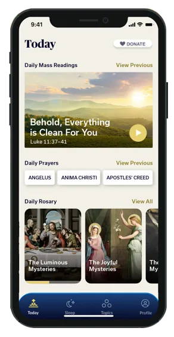
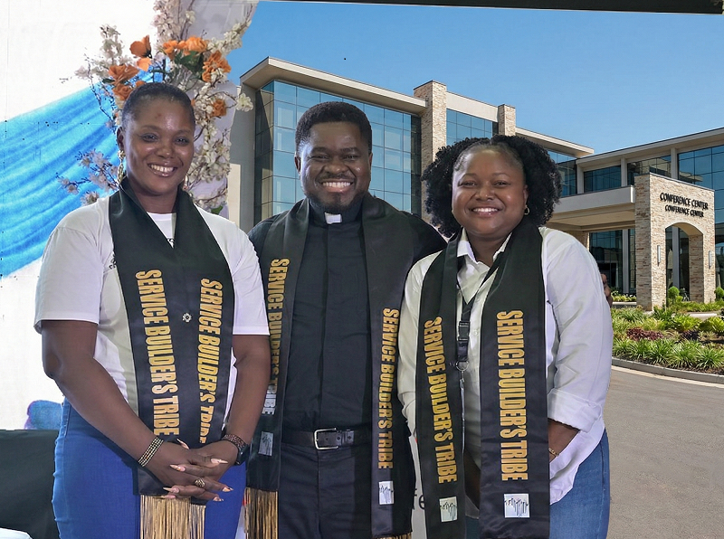

Formation Programs
Discover the Power of Prayer
with the Amen App
The Amen App is the free Catholic prayer app that inspires your daily conversation with God through faithful meditations and nourishing scripture. Please enjoy this latest offering from the Augustine Institute.


Want to Go Deeper in the Faith?
Join the Augustine Institute community for an even richer faith journey through FORMED — a Catholic streaming platform filled with Bible studies, movies, podcasts, and devotionals for children and adults, for families and parishes.
Impact Highlights

CLA Priests Summit
July 2026 – Launching the CLA Summer Conference for Priests with 100 priests from across Africa as mission promoters.

Service & Leadership
July 2026 – Launching the TSL program, a two-year advanced certificate in theology with internship placements.
Learn More
Exploring Catholicism
Launching - April 2026 Clusters of curious and faith-filled Catholics for this quarterly series of engagement with topics of interest to today’s Catholic.

CLA Office Opens in Abuja
With a 5-year lease at the Gaudium et Spes Institute, including office space, library, lecture rooms, chapel, etc CLA consolidate partnership with the Archdiocese of Abuja.

Bi-weekly virtual Bible Study
January 2026 – Bi-weekly virtual Bible Study – with 60-100 Catholics benefitting from a guided study of the Bible facilitated by African priests and faculty from the Augustine Institute.

Augustine Institute Partnership
July 2025 – Church Life Africa-Augustine Institute partnership began. CLA Director, Fr Ken Amadi, joins the faculty at the Augustine Institute Graduate School of Theology.
See MoreUpcoming Events

Theology for Service Leadership
Hybrid learning
Bible in a Year Reflection
Google Meet
CLA Summer Conference
Hybrid

We Look Forward To Hearing From You
There Are Many Ways To Reach Us: By Phone, Email Or In Person
General Inquiry
info@churchlifeafrica.org
+1 (314) 274-1601 | +234 (81) 05155528